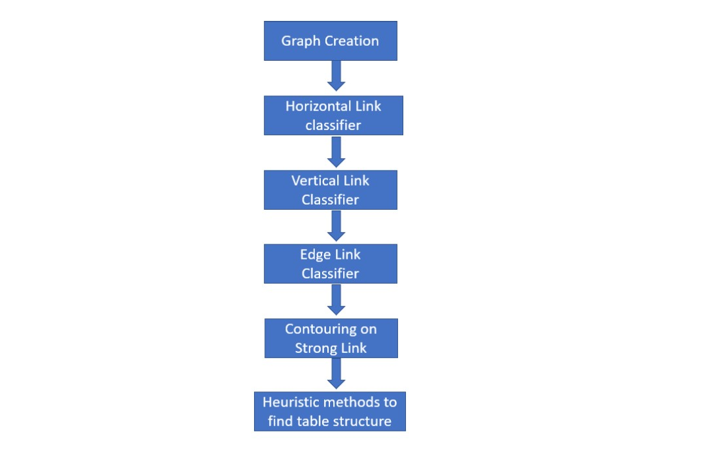
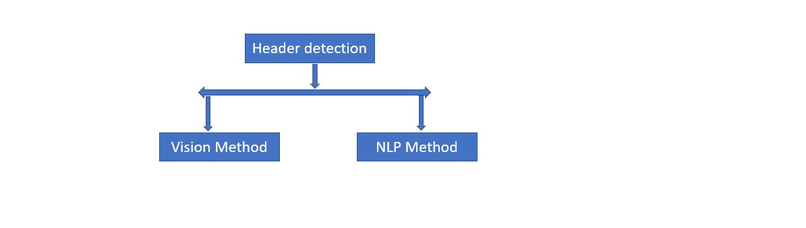
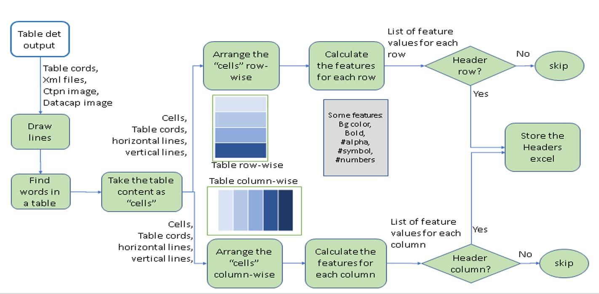
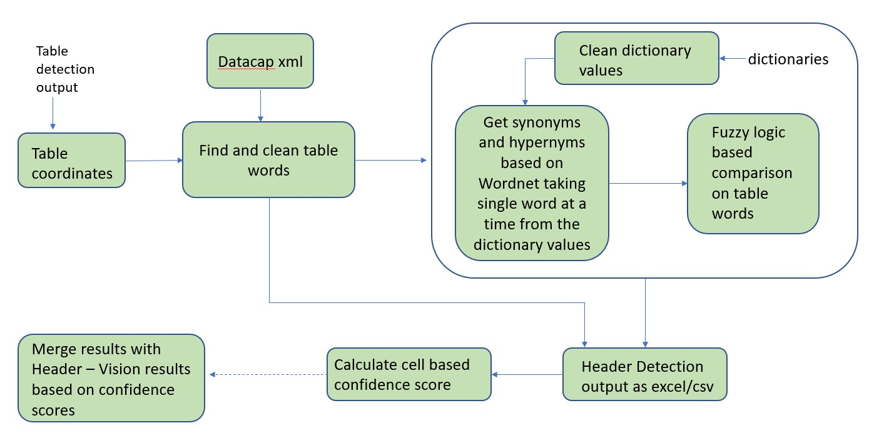

1. Table Digitization Architecture
This is the overview of table digitization process from a data science perspective

A). Graph Model - A Data Science Perspective

B). Header Detection - A Data Science Perspective
Header detection is consist of ensamble of two approach:-
a). Vision Method
b). NLP method 
a). Vision Method

b). NLP Method

2. Installation Guide
To setup cloned virtual environment with required python libraries for table_digitization using environment.yml
Steps:
-
To recreate cloned environment, go to the environment.yml directory, run command:
conda env create -f environment.yml
-
To activate cloned environment,use command:
source activate yourenvname
Additional third party softwares required are:
-
ImageMagick 6.9.9
This command should work: conda install -c conda-forge imagemagick
If not then you can learn more here: https://imagemagick.org/script/download.php
-
GhostScript 9.21
This command should work:
conda install -c conda-forge ghostscript
If not then you can learn more here: https://www.ghostscript.com/download.html
Note: These are windows supported versions of third party softwares.